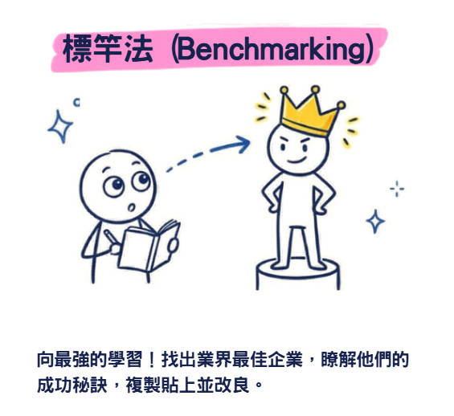
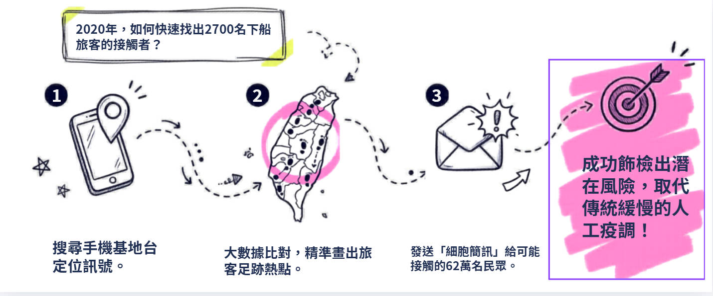

情蒐與偵測 🐰
王秉鈞《管理學》第七章整合報告
教育現場：消失的學生 📉
- 文山區案例： 新小學成立，舊校生源卻縮減，顯示人口偵測失效。
- 少子化現實： 班級人數從 50 降至 20 餘人，小班制被迫提前實現。
- 環境偵測不足： 教育體系未能預見人口結構劇烈改變，資源分配受限。
偵測失效：流浪教師問題 ⚠️
政府忽視人口成長趨緩警訊。
後果： 師範體系持續產出，但系統不再吸納，導致流浪教師社會問題。招生不足令資源捉襟見肘。 🐰💔
數位時代的大數據浪潮 💻
2015 預測
超過 25% 企業導入巨量方案
核心能力
五年內成為公司必備基本功能
利潤模式
解讀巨量資料轉換為商業利潤
數據競爭
不在於大，在於如何運用與解讀
第一節 情蒐與偵測的定義 🔍
情蒐
Information Gathering
重視資料的收集與建檔。
偵測
Investigation
強調事物前因後果的調查。
兩者互通，核心是掌握決策的「事實前提」。
評估環境的技術 🧠
外部環境
政府、產業、對手
內部環境
文化、制度、領導
主觀認知
解讀能力是競爭力來源
事實前提
掌握組織面對的真實樣貌
認知能力與水準是競爭力來源。
外部因素：規範組織大部分可行範圍 🌎
- 政府政策： 最低工資調整對組織人事費之影響。
- 產業趨勢： 天然資源枯竭或海水升溫（如鱈魚北游案例）。
- 競爭動態： 對手多寡與激烈程度直接影響生存。
內部因素：組織文化 🏠
威權 vs. 民主：
軍職威權文化 vs. 證券投資業全員參與之民主模式。
領導風格（開明或專制）深刻影響資訊流動效率。
主觀解讀的決定性 🐰💡
司徒達賢教授：解讀環境是主觀的。
「相同的客觀環境，會因主觀認知不同，產生截然不同的解讀與策略。」
資訊需求分析 🎯
- 功能部門： 行銷與財務經理所需的資訊廣度不同。
- 組織層級： 高階需要環境綜覽；低階需要作業細節。
系統設計必須針對特定對象客製化。
錯誤系統的惡果：霸菱倒閉 🚫
霸菱銀行倒閉 (1995)
交易員李森利用系統漏洞及稽核失效進行套利。
啟示： 錯誤的系統只會加速錯誤決策的災難發生。
整合決策：縱觀全局 🔗
高階主管
加總細部資料，
形成整體發展的策略方向。
資訊處理系統的進化 🚀
雲端運算
解放時空限制
虛擬實境
跨國交流零距離
專家系統
AI 學習專家經驗
行動通訊
隨時隨地機動決策
專家系統的特徵與優勢 🤖
- 專業範疇： 具備特殊領域內的深度知識。
- 邏輯推論： 使用邏輯推論而非單純函數定義。
- 穩定操作： 無情緒影響、不偷懶、不生病。
案例：AlphaGo 的衝擊 ♟️
人類已在智慧競技中向 AI 稱臣。未來競爭將轉向更複雜的非結構化決策項目。
偵蒐的六大目的 🎯
1. 監測變化
2. 瞭解發展
3. 知曉對手
4. 體會需求
5. 掌握機會
6. 提升競爭力
第二節 評估環境的技術 (P182)
環境偵測、預測與標竿設定技術
環境偵測：過濾趨勢 📡
- 過濾資訊： 找出即將浮現的趨勢，勾勒未來可能景象。
- 情報管道： 95% 資訊來自廣告、年報、政府公告。
- 逆向工程： 拆解對手產品以測知技術創新。
未來景象預測法 (Scenario) 🔮
全球偵測：三菱商事案例 (一) 🌐
- 龐大情報網： 全球雇用超過 6 萬名分析師（總公司 6 千人）。
- 人才培力： 設立全球實習基地，強調現場「臨場感」。
- 全球視野： 培養具備全球思維與進修經驗的領導人才。
全球偵測：三菱商事案例 (二) 🌐
- 超級聚合體： 轉型為銀行、智囊、情報中心與企業大學。
- 對台啟示： 擺脫代工思維，投入經費掌握主要市場資訊。
- 資訊投資： 掌握關鍵原料供應量與價格，維持合理利潤。
標竿法：知己知彼 ♟️

與行業中最佳企業比較，發現差距。核心在於學習與改進流程。源自全錄 (Xerox) 赴日學習案例。
第三節 情報與資訊來源 (P189)
政府、學術、民間與非正式管道
情報來源：政府資料庫 🎓
主計總處
普查、薪資就業、歲計預算
經濟部
外銷訂單、工業生產、製造投資
地方政府
市政統計、歲計會計、年度普查
調查統計
人力運用、受僱員工薪資調查
情報來源：學術機構 📖
- 中研院： 提供「社會變遷基本調查」與各類景氣數據。
- 研究機構： 經濟研究所公布消費者信心指數。
- 碩博士論文： 專業領域深度分析的最佳參考來源。
- 選舉研究中心： 選民意見與社會動向調查。
非正式管道：葡萄藤 🍇
(在台灣：小道消息)
傳播迅速但易失真。主管應塑造信任氣候，建立公開透明制度，消滅謠言溫床。
民間數據變革：尼爾森的局限 📊
傳統 1,800 戶抽樣已存在結構性偏差。
數位機上盒 91% 的足跡數據，代表性遠超傳統抽樣統計。 🐾
改善預測效能的建議 💡
- 化繁為簡： 簡單技術常優於過度運算的複雜方法。
- 勿守成： 科技時代切勿預設未來不變。
- 交叉互證： 應參考多種方法，不依賴單一模型。
- 正確長度： 時間越長正確性越低。
第四節 數位時代大數據 🌐
Volume
銀河般巨量資料
Velocity
資料生成與累積速快
Variety
形式多元(語音照片)
Veracity
確認真實性過濾虛假
防疫實例：鑽石公主號 🚢
- 24 小時內生成電子足跡地圖。
- 交叉驗證 62 萬人手機定位。
- 結合健保資料庫精準監控新冠病例。

數據的憂患：隱私與界線 🔒
隱私保護是大數據發展的關鍵方向。平台應告知數據用途，維護使用者權益。 🐰🐾
Q&A 互動時間 (1) 🐰❓
問題： 環境偵測和預測有何關係？
Q&A 互動時間 (2) 🐰❓
問題： 標竿設定如何改善組織的品質？

謝謝各位的聆聽！
報告人：林宛儀 NB41F010 🐇